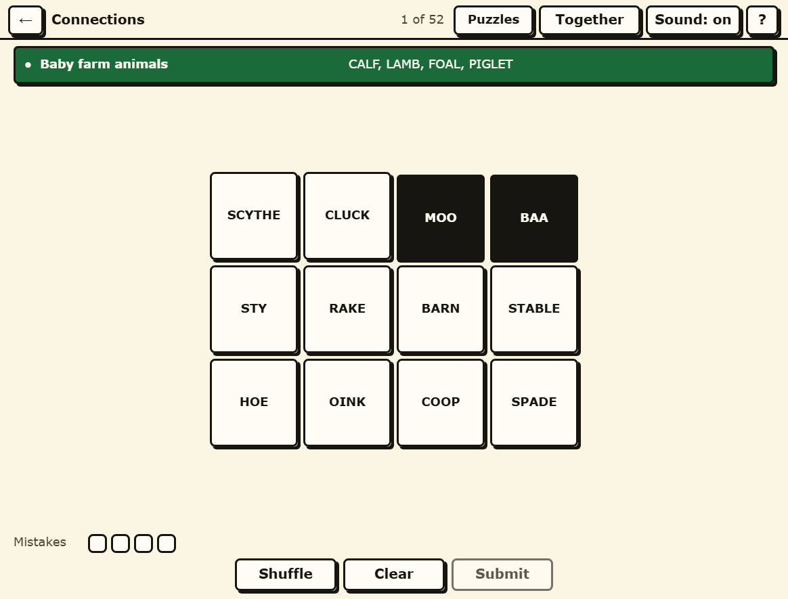

Farmy Connections
Sixteen words, four secret groups of four, and four mistakes to spend finding them.
Play Farmy Connections in your browser →

How it plays
Sixteen words sit on the board and every one of them belongs to exactly one of four hidden groups. Choose four that you think go together and submit them. A correct group collapses into a band with its category name on it - "Baby farm animals", "Where livestock sleep" - and the rest of the board closes up. A wrong one costs you one of your four mistakes.
The four groups are ordered by how hard they are meant to be, and that order drives the colour of each band and the shape badge on it, so the easiest group and the hardest are told apart by more than a hue.
One away, which is the whole feel of the game
A wrong guess that holds exactly three members of one group is told that it is one away. It matters more than it sounds: without it every wrong guess is the same wrong guess, the puzzle gives you nothing to climb, and four mistakes are gone with nothing learned between them. The trick a first version always misses is being one away from a group you were not aiming at, which counts just the same.
The board is the same board on every screen
The shuffle is worked out from the puzzle number rather than at random, so set 12 is laid out identically on your laptop and on somebody else's phone. That is what makes "the one starting with HAY, top left" a sentence worth saying out loud - and it is what lets two people in a room talk about one board without leaning across to point.
Fifty-two sets, none of them locked
There is a set of the day and it rotates through the whole lot, but nothing expires. All fifty-two are in a dropdown on the same screen, numbered, so you can play three this evening and pick up where you left off next week.
Sweep four words, or click them
Press and drag across four tiles that sit together and they select as your hand passes over them; or click them one at a time, in any order, which is what you will do when the four are scattered. Shuffle re-lays the board if you are stuck looking at it the same way, and Clear puts everything back. Every board can also be worked with the arrow keys.
Built for eyes that are not twenty any more
- Nothing is said with colour alone. Each solved group carries a shape badge as well as its colour, and the mistake counter is four boxes you can count rather than a number to read.
- Text clears AAA contrast, not AA. 7:1 rather than 4.5:1, dark ink on warm cream rather than black on white.
- Nothing is smaller than 18 pixels and nothing you can press is smaller than 48 by 48. Sixteen word tiles is the most crowded screen in the game, and it still holds that floor.
- There is no timer and no streak that a slow week can break.
- Nothing moves unless you ask it to. Transitions last 120 milliseconds and switch off if your browser says you prefer reduced motion.
Play it with somebody
Press Play together and you get a room: the same sixteen words, one shared board, and every selection and solved group appearing on both screens. Send the link, or read out the six-character code - it has no O, I, L, S, Z, B, 0, 1 or 5 in it, precisely so it survives being said down a telephone. Four mistakes between two people is a conversation, not a race.
No account, no sign-in, nothing kept
Your progress lives in your own browser and goes nowhere else. There is no sign-in and no download, and playing on your own makes no network call at all once the page has loaded. Playing together connects the two browsers directly to each other: the moves go peer to peer, there is no game server, and the room stops existing the moment you close the tab.
The other three games
Farmy Connections is one of four word games in Farmy Crosswords, and they share the one page, the one style and the one Play together room.
- Farmy Wordle - six guesses at a five-letter word, 65 of them.
- Farmy Spelling Bee - seven letters, the middle one compulsory, 53 hives.
- Farmy Strands - a themed grid where every letter belongs to a word, 53 of them.